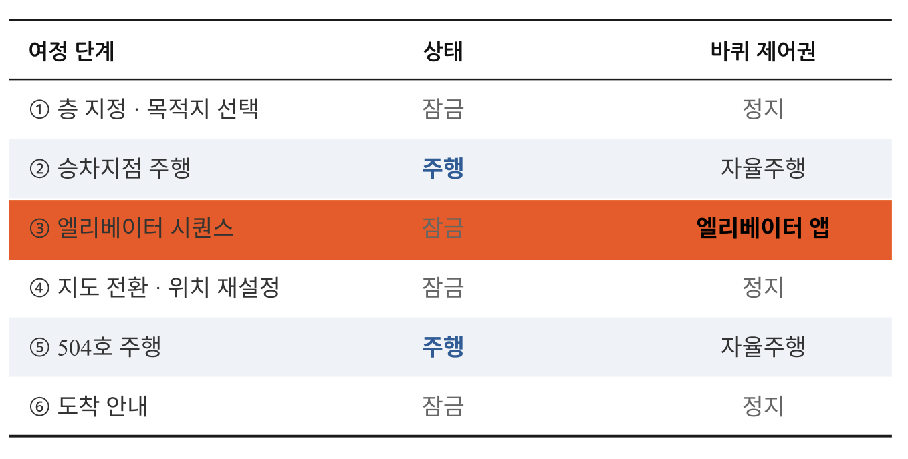

Jongha Lee
로봇 소프트웨어 개발자 · ROS2 · 컴퓨터비전 · 시스템 통합
About
사람 곁에서 움직이는 로봇의 소프트웨어를 만듭니다.
시각장애인 안내 로봇과 전동휠체어 자동 주차를 실제 로봇에서 개발해 왔습니다. 모듈을 각각 만드는 것보다 합쳤을 때 깨지는 지점을 찾는 일, 그리고 사용자가 실패를 볼 수 없는 환경에서 안전하게 실패하는 방법을 주로 다룹니다.
웹 서비스와 백엔드, 사운드와 인터랙션을 결합한 뮤직테크놀러지 작업도 함께 해왔습니다.
Skills
Education
전공 학점 4.35 / 4.5 · 평점 평균 4.22 / 4.5 · 교육부 예술체육비전 장학생
Research
정부지원 연구센터 과제로 시각장애인 안내 로봇 · 전동휠체어 자동 주차 시스템 개발
시각장애인 당사자 인터뷰 기반 요구사항 도출 · ITRC 인재양성대전(코엑스) 시연
Awards
산업통상자원부 · KIAT · 단국대학교 공학교육혁신센터
Projects
Robotics & Embedded
시각장애인 실내 안내 로봇
문제 — 시각장애인의 실내 이동에서 가장 막히는 것은 층간 이동입니다. 엘리베이터는 버튼 위치가 제각각이고, 로봇–엘리베이터 연동은 승강기 제조사와 제작 연도마다 제어 방식이 달라 쓸 수 있는 표준 API가 없습니다(국가표준 KS도 제정 중).
해결 — 연동 규격에 기대지 않고, 상용 플랫폼(Hello Robot Stretch SE3) 위에 그리퍼 카메라로 층 버튼을 직접 인식해 누르는 방식을 구현했습니다. 층 전환 시에는 지도를 교체하고 위치추정(AMCL)을 재초기화합니다.

~?로 표시하고 패턴으로 추정한다.
- ROS2 Humble · Nav2 기반 자율 주행, RPLidar + RealSense D435i 환경 인식
- 그리퍼 카메라 OCR로 엘리베이터 버튼 인식 · 가압 — 정렬은 자동, 실제 가압은 사용자 승인 후 실행
- 층별 지도 전환과 AMCL 재초기화 — 실패 시 4층인데 5층 지도로 주행하는 위험을 별도 관리
- 사용자가 로봇의 실패를 볼 수 없다는 제약 → LLM에는 의도 해석만 맡기고, 최종 확정은 물리 버튼으로 분리
- 주행·음성·엘리베이터 모듈을 하나의 상태머신으로 통합. 모듈별로는 동작하나 합치면 깨지는 문제를 재설계로 해결
- 손잡이 하드웨어를 3D 모델링·출력하고 아두이노 압력센서를 ROS2에 연동
- Nav2 footprint를 5각형·뒤 −0.85 m로 확장해 뒤따르는 사람을 로봇 크기에 포함, 후진 차단(min_vel_x 0.0)
- 시각장애인 당사자 인터뷰로 요구사항 수집 — 부정적 반응이 나온 장애물 밀기 기능은 보류
전동휠체어 자동 주차 시스템
문제 — 전동휠체어 사용자가 차에 탄 뒤, 남겨진 휠체어를 수납하려면 반드시 타인의 도움이 필요합니다. 혼자 운전하는 사용자에게는 외출 자체의 제약이 됩니다.
1차 접근과 전환 — 처음에는 차량의 어라운드뷰 카메라로 휠체어를 봤습니다. 어안 렌즈 왜곡으로 위치 추정값이 튀었고, SolvePnP 잔차가 거리·각도에 따라 체계적으로 편향되는 것을 확인해 Ridge Regression 보정층과 칼만 필터를 붙였습니다. 그래도 오차가 남았고, 원인이 튜닝이 아니라 “고정된 카메라로 넓은 영역을 왜곡 보정해 본다”는 구조 자체에 있다고 판단해 카메라를 차량에서 휠체어로 옮겼습니다.

- V1 담당 — 어안 캘리브레이션 → ArUco 검출 → SolvePnP → Ridge Regression 잔차 보정층 → 칼만 필터 3단 자세추정 파이프라인 설계
- 보정층 특징 설계: 바닥거리 · 마커각도 · 시선각 · 재투영오차를 넣어 편향을 학습 기반으로 보정
- 파이프라인 8단계 중 7단계가 실기체에서 동작 (AgileX TRACER 섀시 · CAN 제어)
- V2 담당 — 공공 데이터셋의 도메인 불일치를 자체 촬영·라벨링(실차 121장 + 목업 60장)으로 해결
- 번호판 실측 규격(335 × 155 mm)과 핀홀 모델로 거리 · yaw · bearing 추정
- IBVS 정렬 + 초음파 평행 맞춤 + IMU 회전각 제어를 결합한 9단계 주차 / 7단계 출차 시나리오 구현
- 캐스터 휠 구조상 직진이 바퀴 정렬 상태에 따라 휘는 문제 — 관측 불가 구간으로 규정하고 IMU 회전각 보장 로직으로 보완
- Jetson Nano(4 GB) 부하 측정: 320 px 기준 지속 15 FPS, 추론 42 ms, RAM 3.55/3.96 GB, 5.8 W. 스왑 부족 프리징을 4 GB 확장으로 해소
두리 — AI 스마트 순찰 로봇
도심 내 포트홀·점자블록 파손을 실시간으로 감지하고 자율 순찰하는 AI 로봇 프로토타입입니다.
2025 지능형 로봇 SDGs 아이디어 공모전 대상 (시상 2026.01)- YOLOv8 기반 실시간 위험 요소 탐지 및 유지보수 우선순위 분류
- ROS2 + SLAM 기반 자율 주행 및 GPS 데이터 전송
- Unity 2022 환경 시뮬레이션 구현
- 크롤러형 3D 모델링 및 시스템 설계
악력 재활 훈련 시스템
문제 — 악력을 회복해야 하는 환자의 재활 훈련은 반복적이고 지루해 지속률이 낮습니다. 그런데 로드셀 원신호는 손이 닿는 순간 수십 kg짜리 스파이크가 튀고, 힘을 유지해도 값이 계속 진동해 게임 입력으로 바로 쓸 수 없습니다.
해결 — 원신호를 신뢰할 수 있는 제어 입력으로 만드는 신호처리 파이프라인을 만들고, 그 위에 악력으로 조작하는 재활 게임 3종과 실시간 신디사이저를 올렸습니다.
- 필터 순서가 설계 지점 — 스파이크를 먼저 버리지 않으면 중간값·이동평균 윈도우가 오염되고, 데드존을 먼저 걸면 스파이크가 그대로 통과
- 센서 80 Hz와 게임 루프 60 Hz의 주기 불일치를 스레드 분리 + 큐로 해결. 시리얼 읽기 지연이 프레임 드롭으로 번지지 않게 함
GripSensor추상 인터페이스에 Mock(키보드) / Arduino(USB) / 라즈베리파이(GPIO) 3종 구현 — 로드셀 없이도 게임 로직 개발·디버깅 가능- 영점(Tare) 3초 + 최대 악력 5초 자동 캘리브레이션, 결과를 JSON으로 저장해 재사용
- 게임마다 요구하는 입력 특성이 달라 파이프라인 검증에 사용 — 유지(풍선), 순간 입력(두더지), 좌우 차이(우주 조종), 연속 변화(신디사이저)
- 진동 모터 구동 시 오른손 센서가 끊기는 문제 — 원인이 전류 부하임을 확인하고 NPN 트랜지스터(2N2222) 구동으로 회로 변경
- 로드셀 마운트를 3D 모델링·출력, 아두이노 시리얼 프로토콜 직접 설계
Software & AI
아티스트 홍보 플랫폼 SEIHI
아티스트 정보 및 멀티미디어 콘텐츠 관리를 위한 풀스택 웹 애플리케이션입니다. Google OAuth 및 이메일 OTP 인증, Cloudinary 기반 파일 업로드를 지원합니다.
- FastAPI + PostgreSQL(NeonDB) 기반 백엔드 API 설계 및 구현
- React 18 + TypeScript + Tailwind CSS 프론트엔드 구현
- Google OAuth 2.0 및 이메일 OTP 다중 인증 시스템
- Cloudinary CDN 기반 이미지·음원 파일 업로드
- Docker Compose 환경 구성 및 Cloudtype 배포
단국대학교 뉴뮤직학부 연습실 예약 시스템
단국대학교 뉴뮤직 학부 학생들을 위한 연습실 예약 및 장비 관리 웹 서비스입니다. 학생과 관리자의 역할을 분리하여 예약 및 승인 시스템을 구현했습니다.
- FastAPI 기반 백엔드 API 설계 및 구현
- JWT 기반 인증 및 권한 관리
- 주 단위 예약 정책 및 중복 예약 방지 로직 구현
- AWS EC2 환경 배포 및 운영
DelRev — 3D 스텔스 서바이벌 게임
다양한 배경과 고유 AI 몬스터로부터 도망치며 생존하는 풀-3D 스텔스 서바이벌 게임입니다. 4인 팀에서 클라이언트 개발과 사운드 디자인을 담당했습니다.
2025 단국 G-RISE 캡스톤디자인 경진대회 G7부문 장려상 2025 단국대 SW중심대학 캡스톤 페스티벌 장려상- Unity 2022(URP) + C# 기반 게임 클라이언트 개발
- 시야각·거리·조명 기반 탐지 메커닉 및 10+ 유형 몬스터 AI 구현
- 위험게이지·데드라인 등 핵심 자원 관리 시스템 설계
- 게임 사운드 디자인 및 상황별 오디오 연출
실시간 표정 인식을 이용한 감정 기반 TTS 보컬 합성 시스템 연구
사용자의 얼굴 표정을 실시간으로 인식하여 감정 상태를 추정하고, 이를 보컬 합성(Text-to-Speech)에 즉시 반영하는 감정 기반 TTS 시스템을 설계·구현한 학사학위 논문입니다.
- MediaPipe 및 CNN 기반 실시간 표정 인식(FER) 모듈 구현
- 지수이동평균(EMA) 및 다수결 투표 기반 감정 안정화 기법 적용
- Flask 서버를 통한 감정–TTS 매핑 파이프라인 설계
- OpenAI TTS API를 활용한 실시간 감정 보컬 합성
- 웹 기반 UI를 통해 문장 단위 감정 태그 자동 생성
생성형 AI 기반 맞춤형 반도핑 예방교육 시스템 개발
연세대학교 AI 혁신연구원 프로젝트로, 2026년 8월부터 진행하고 있습니다. 선수 경기력 데이터와 생성형 AI를 결합한 맞춤형 도핑 예방교육 시스템을 개발하고 있습니다.
- LLM 기반 생성형 AI 모듈과 예방교육 DB를 연계한 RAG 파이프라인 구축
- 선수 프로파일링과 사용자 역할을 반영한 개인화 프롬프트 설계
- 응답 범위 제한·전문가 상담 안내 등 환각(hallucination) 억제 안전장치 구현
WGBS 유전체 분석 자동화 데스크톱 프로그램
서울대학교·연세대학교 연구진과 함께 진행한 유전체 분석 자동화 프로젝트에서 Python 애플리케이션 개발을 담당했습니다. 기존에 연구자가 명령줄에서 여러 도구를 오가며 수작업으로 수행하던 다단계 분석 과정을, 프로그래밍 경험이 없는 연구자도 사용할 수 있는 GUI 프로그램으로 통합했으며 실제 연구 데이터의 전 과정 분석에 사용되었습니다.
- Tkinter 기반 6단계 순차 진행형 UI 설계 및 단계 이동 시 입력 검증으로 실행 전 오류 차단
- 장시간 연산을 백그라운드 스레드로 분리하여 실행 중 화면 멈춤 현상 방지
- 기존 분석 모듈의 콘솔 출력을 코드 수정 없이 GUI 로그로 실시간 중계하는 구조 설계
- 실행 환경 자동 탐지 및 단일 실행 파일 배포 구성으로 별도 설치 과정 제거
※ 특허 출원 준비 중으로 소스 코드는 비공개입니다.
Cloud-Native Kubernetes Cluster Infrastructure
CloudStack 환경에서 프로덕션 수준의 Kubernetes 클러스터를 Infrastructure as Code 방식으로 설계 및 자동화한 프로젝트입니다.
- Terraform을 활용한 인프라 프로비저닝
- Ansible 기반 Kubernetes 클러스터 자동 구성
- Jenkins + GitLab CI/CD 파이프라인 구축
- MetalLB를 활용한 서비스 외부 노출
Music Technology
서울 마장중학교 오케스트라·밴드부 방과후 지도 강사
서울 마장중학교 방과후학교에서 오케스트라·밴드부 학생들의 합주 지도를 담당했습니다. (2026.08)
- 파트별 점검 및 팀별 합주 지도
- 마장중학교 연주회 무대 지도 및 피드백
국립국악원 국악 음원 규격화 및 아카이빙
국립국악원 음원을 대상으로 사운드 규격 제작과 음질 균일화 후반 작업을 수행했으며, 국립국악원 × Qlaudio 국악기 사운드 정리 프로젝트에 협업으로 참여했습니다.
- 성악 음원의 손상 복원 및 노이즈 제거
- 아카이빙을 위한 사운드 품질 표준화
- 포맷·파일명 통일 및 음원 데이터 정리
- 국악기 음원 데이터 정리 및 포맷 통일 (Qlaudio 협업)
- 정리된 음원은 국악 가상악기 「조선 시리즈」(36종 국악기)로 제작·출시
단편영화 「After Session」 음악 제작
권혁준 감독의 단편영화 「After Session」의 음악을 제작했으며, 영화의 정서와 흐름에 맞춘 작곡 및 사운드 디자인을 진행했습니다.
- 영화 장면 분석 기반 음악 구성
- 작곡 및 편곡
- 최종 믹싱 및 납품
인터랙티브 사운드 & 퍼포먼스 작업
인터랙션과 사운드를 결합한 퍼포먼스 및 실험적 작업들입니다.
- MediaPipe 기반 제스처 인식
- Max/MSP를 활용한 실시간 사운드 제어
- Unity 기반 공간 음향 연동